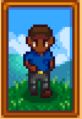
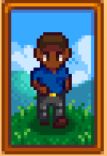
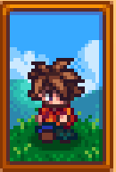

The Friendliest Neighbors!
Meet the owners of Pierre's General Store.
Pierre sells you seeds while Caroline shares her Tea with you.
Loved gifts include:
Fried Calamari and Price Catalogue for Pierre.
Fish Taco, Green Tea, Summer Spangle and Tropical Curry for Caroline.
Caroline teaches you how to make Parsnip Soup and Vegetable Stew
while Pierre shares his Blueberry Tart recipe with you.
Clint is the town Blacksmith.
Loved gifts include:
Amethyst, Aquamarine, Artichoke Dip, Emerald,
Fiddlehead Risotto, Gold & Iridium Bar, Jade, Omni Geode, Ruby and Topaz.
He will teach you how to make Algae Soup and Bean Hotpot
 
Robin, the town Carpenter and her husband Demetrius, the scientist.

Robin, the town Carpenter and her husband Demetrius, the scientist.
They live at 24 Mountain Road with their children, Sebastian and Maru.
Loved gifts include:
For Demetrius, Bean Hotpot, Ice Cream, Rice Pudding and Strawberry.
Goat Cheese, Peach, Spaghetti and the book "Woody's Secret" for Robin.
Demetrius will teach you Fried Mushroom and Autumn's bounty,
while Robin gifts you the recipe for Pumpkin Soup.
 George and Evelyn are the residents of 1 River Road with their grandson Alex.
George and Evelyn are the residents of 1 River Road with their grandson Alex.
Loved gifts include:
Fried Mushroom and Leek for George.
Beet, Chocolate Cake, Diamond, Fairy Rose, Raisins, Stuffing and Tulip for Evelyn.
Evelyn teaches you how to bake Cookies and Rice Pudding,
while George teaches you Fried Eel and Spicy Eel.
Meet Gus, the owner of the Stardrop Saloon.
Loved gifts include:
Diamond, Escargot, Fish Taco, Orange and Tropical Curry.
He shares the recipe for Salmon Dinner and Cranberry Sauce.
Jas, the adorable niece of Marnie, lives on Marnie's Ranch with her Godfather Shane.
Loved gifts include:
Diamond, Farmer's Lunch, Pink Cake and Pumpkin Pie for Marnie.
Ancient Doll, Fairy Box, Fairy Rose, Pink Cake,
Plum Pudding and Strange Doll (Green & Yellow) for Jas.
Marnie teaches you how to make Pale Broth and Rhubarb Pie,
while Jas gives you Spring Onion Mastery.
Jodi, her husband Kent live with their sons Vincent and Sam at 1 Willow Lane.
Loved gifts include:
Chocolate Cake, Crispy Bass, Diamond, Eggplant Parmesan, Fried Eel,
Pancakes, Rhubarb Pie and Vegetable Medley for Jodi.
Fiddlehead Risotto and Roasted Hazelnuts for Kent.
Cranberry Candy, Frog Egg, Ginger Ale, Grape, Pink Cake and Snail for Vincent.
Jodi teaches you Fried Calamari and Ice Cream,
Kent teaches you Crispy Bass and Super Meal
while Vincent gives you Spring Onion Mastery.
Find the Dwarf in the Eastern Mines, running his shop.
Loved gifts include:
Amethyst, Aquamarine, Emerald, Jade,
Lava Eel, Lemon Stone, Omni Geode, Ruby and Topaz.
He teaches only life lessons.
Krobus is the loveable Sewer monster who can become your roommate.
Loved gifts include:
Diamond, Iridium Bar, the "Monster Compendium", Monster Musk,
Pumpkin, Void Egg, Void Mayonnaise and Wild Horseradish.
He teaches you to craft a Dark Sign.

Leo, the orphaned Bird Boy found on the Volcano Island.
Loved gifts include:
Duck Feather, Mango, Ostrich Egg, Parrot Egg and Poi.
He teaches you how to make Poi and Mango Sticky Rice.
Mayor Lewis, the man with several secrets, can be found in the Mayor's Manor.
Loved gifts include:
Autumn's Bounty, Glazed Yams,
Green Tea, Hot Pepper and Vegetable Medley.
He teaches you how to make Spaghetti and Eggplant Parmesan.
Linus is the town's wild man, living in a tent in the mountains.
Loved gifts include:
Blueberry Tart, Cactus Fruit,
Coconut, Dish O' The Sea, "The Alleyway Buffet" and Yam.
He teaches you how to make Sashimi, Fish Taco and most importantly, how to craft Wild Bait.
 Pam drives the bus every day, living with her daughter Penny in their trailer.
Pam drives the bus every day, living with her daughter Penny in their trailer.
Loved gifts include:
Beer, Cactus Fruit, Glazed Yams, Mead,
Pale Ale, Parsnip, Parsnip Soup and Piña Colada.
Pam shows you how to make Cheese Cauliflower and Stuffing.
Sandy runs a store in the Oasis Desert, with a mysterious shop on the floor above.
Loved gifts include:
Crocus, Daffodil, Mango Sticky Rice and Sweet Pea.
She gives you the recipe for Tom Kha Soup.
Willy is the local fisherman who can be found in his shop on the beach.
Loved gifts include:
Catfish, Diamond, Gold & Iridium Bar, "Jewels Of The Sea",
Mead, Octopus, Pumpkin, Sea Cucumber, Sturgeon and "The Art O' Crabbing".
He teaches you how to make Chowder, Escargot, Fish Stew and Lobster Bisque!
 The mysterious Wizard can be found in his Tower.
The mysterious Wizard can be found in his Tower.
Loved gifts include:
"Book Of Mysteries", Purple Mushroom,
Solar Essence, Super Cucumber and Void Essence.
This man will teach you to speak to the trees and change your appearance...For a cost.